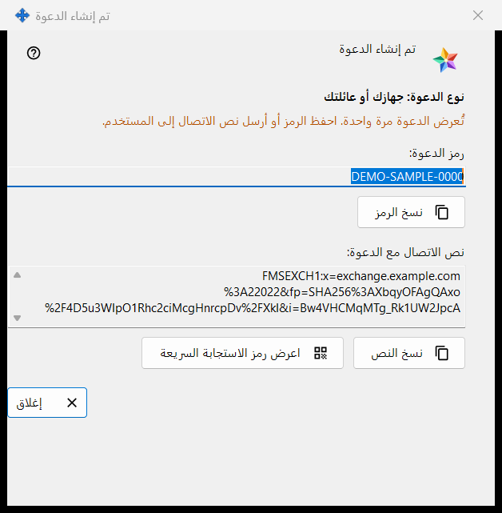
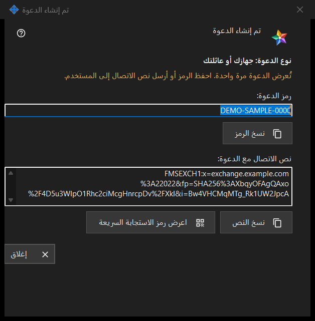

تم إنشاء الدعوة
الغرض من هذه النافذة
تعرض هذه النافذة الدعوة الجديدة مرة واحدة، مباشرة بعد الضغط على إنشاء في النافذة إنشاء دعوة. وفيها الرمز الذي يُستخدم مرة واحدة، ونص اتصال يحمل الرمز بالفعل إذا استطاع برنامج خادم التبادل إنشاءه.


بهذا الترتيب
- راجع السطر الذي يبدأ بـ نوع الدعوة للتأكد من النوع المختار.
- اضغط نسخ الرمز، أو نسخ النص لنص الاتصال الذي يحمل الدعوة، أو اعرض رمز الاستجابة السريعة.
- سلّمه للشخص عبر قناة تثق بها.
- اضغط إغلاق. لا يُعرض الرمز نفسه مرة أخرى.
عناصر النافذة
النوع والتحذير
يذكر السطر الغامق النوع الذي اخترته، مثل نوع الدعوة: جهازك أو عائلتك. وعند إغلاق النافذة يُمحى الرمز والنص منها. وإذا ضاع أحدهما فاسحب الدعوة من القائمة وأنشئ دعوة جديدة. ويقول السطر بلون التحذير: تُعرض الدعوة مرة واحدة. احفظ الرمز أو أرسل نص الاتصال إلى المستخدم.
رمز الدعوة
رمز الدعوة: مربع للقراءة فقط يعرض الرمز. والزر نسخ الرمز ينسخه بوصفه سرًّا، بعيدًا عن سجل حافظة Windows (Win+V) وعن الحافظة السحابية، ويظهر أسفله أحد السطرين: تم نسخ رمز الدعوة إلى الحافظة. أو: تعذّر نسخ الرمز إلى الحافظة.
نص الاتصال مع الدعوة
نص الاتصال مع الدعوة: لا يظهر إلا إذا أمكن إنشاء النص. فهو يسمّي الخادم ويحمل الرمز، لذا عامله كما تعامل الرمز: الزر نسخ النص ينسخه هو الآخر بوصفه سرًّا. ولا يحتوي على كلمة مرور حسابك.
رمز QR
الزر اعرض رمز الاستجابة السريعة يفتح صورة لنص الاتصال الذي يحمل الدعوة. ويستطيع كل من يراها استخدام الدعوة، فلا تعرضها إلا للشخص المقصود. وإذا تعذّر إنشاء الصورة ظهر السطر: رمز QR غير متاح حاليًا.
ما يفعله الشخص الآخر
في نافذة حساب التبادل (تسجيل الدخول..) يلصق الشخص النص بالزر لصق أو يفتح ملفًا محفوظًا. والنص الذي يحمل دعوة ينقل النافذة إلى التسجيل: يختار اسم حساب، ويدخل كلمة المرور مرتين، ثم يضغط إنشاء الحساب. وتُرفض الدعوة الخاطئة أو المستخدمة من قبل، واسم الحساب المأخوذ، برسالة.
إغلاق
الزر إغلاق يُنهي النافذة ويمحو منها الرمز والنص. ولا يُحفظ شيء آخر هنا.